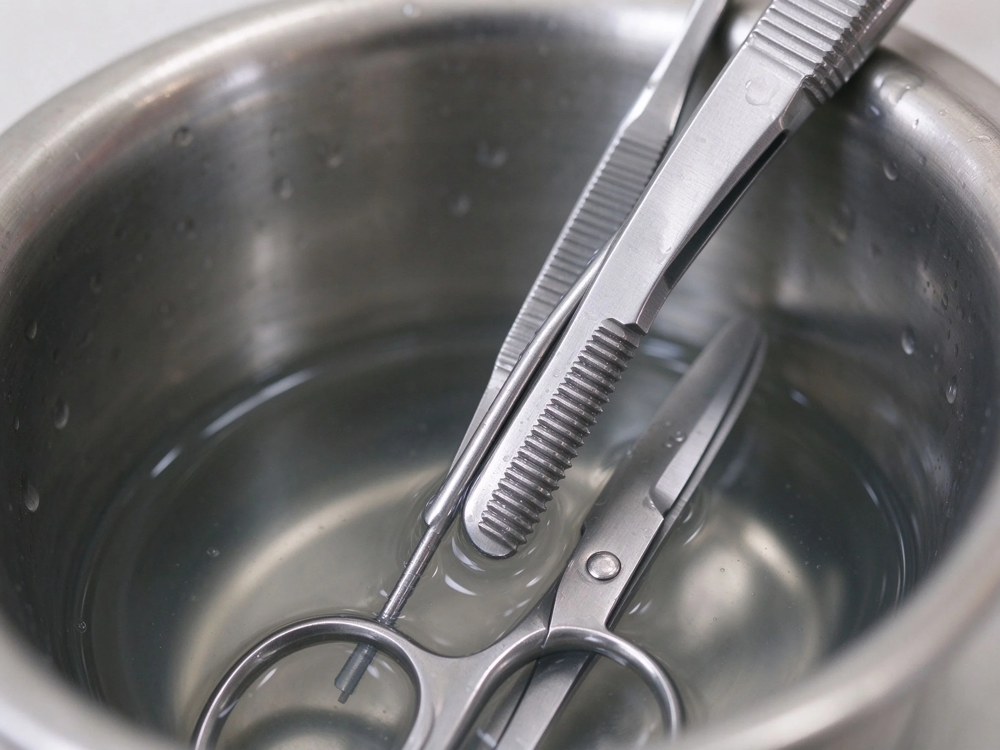

美甲交叉感染防護是什麼？中階入門攻略
上一位客人有灰指甲，下一位沒消毒就修甲——這是沙龍最可怕的夢魘。
交叉感染防護原理與辨識重點：美甲師不說的一人一套工具
交叉感染指細菌、黴菌、病毒透過工具或雙手，從一個人傳給下一個人。美甲工具會碰指緣、可能見血，風險比你想的高。核心做法三條：拋棄式用品用完即丟、金屬工具高溫滅菌、自己和客人的接觸面都要有防護。
誰適合做交叉感染防護？顧客安全對號入座
所有開店或接案的美甲師；也是消費者判斷一間店乾不乾淨的觀察指標。
交叉感染防護美甲施作步驟：拋棄式工具＋隔離
拋棄式銼條、木棒、棉片一人一份 → 金屬剪推完立刻進消毒盆 → 做完一位、桌面噴酒精擦拭 → 自己洗手、必要時戴手套口罩 → 客人指甲有明顯傷口或黴菌，先勸他就醫，不要硬做。
交叉感染防護優缺點分析：美甲持久度與傷甲評估
| 優點 | 說明 |
|---|---|
| 做到位，客人安心、自己也不會被傳染；這是長期經營的信用基礎。 | 是通用流派的招牌，中階就能上手 |
| 缺點 | 說明 |
| 拋棄式用品成本高一點、滅菌流程也多一道手續——但這是不能省的成本。 | 前置與最忌同一支銼條兩三位客人用、酒精噴一噴就算消毒。酒精殺不了黴菌孢子，金屬工具一定要高溫滅菌。沒顧好會打折 |

交叉感染防護新手雷區：手套與口罩與常見錯誤
注意：最忌同一支銼條兩三位客人用、酒精噴一噴就算消毒。酒精殺不了黴菌孢子，金屬工具一定要高溫滅菌。
交叉感染防護和其他美甲做法的差別比較
跟「消毒滅菌」類似但角度不同：那篇教你工具怎麼殺菌；這篇教你整個服務流程怎麼避免一個傳一個。
交叉感染防護美甲常見問題 FAQ
Q：客人說他有香港腳，可以做嗎？ A：先確認是腳不是手；手部有開放性傷口、明顯黴菌感染，建議先就醫，痊癒再預約。
Q：手套一定要戴嗎？ A：修剪甘皮、可能見血的步驟建議戴；單色凝膠不一定，但戴了是雙方都保護。